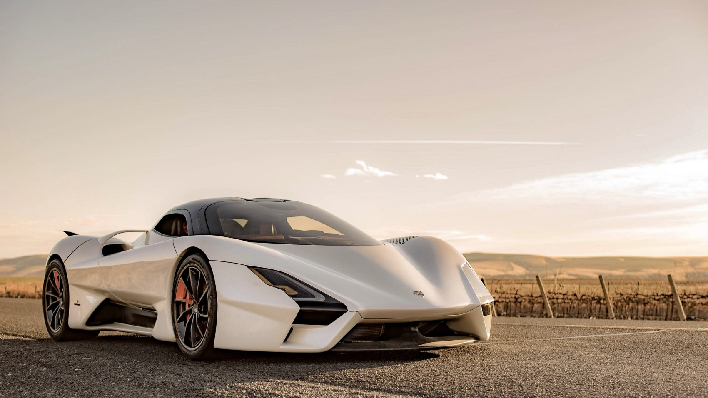

El SSC Tuatara es un coche superdeportivo estadounidense, fabricado por SSC North America (anteriormente Shelby SuperCars Inc.). Es conocido por su diseño aerodinámico y su impresionante velocidad, habiendo establecido récords como uno de los coches de producción más rápidos del mundo.
